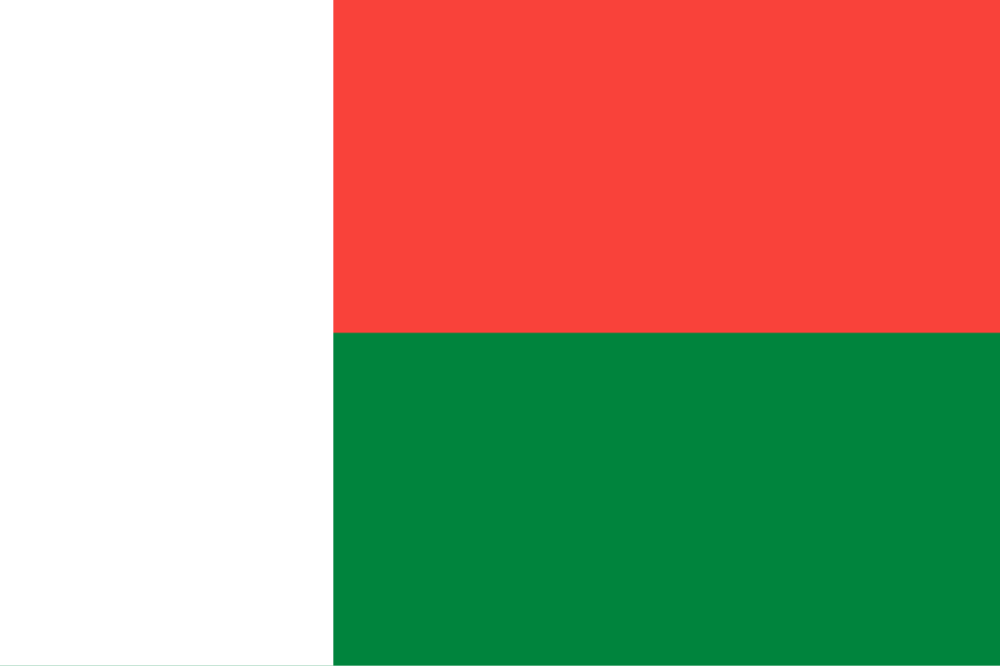

Madagáscar
 Madagáscar, oficialmente República de Madagáscar, é uma grande ilha localizada no Oceano Índico, a leste da costa africana, separada pelo Canal de Moçambique. É a quarta maior ilha do mundo, com cerca de 587 mil km², e possui uma das biodiversidades mais ricas e únicas do planeta. Sua capital é Antananarivo, no planalto central. Colonizada pela França no século XIX, conquistou a independência em 1960 e, desde então, enfrenta desafios sociais, econômicos e políticos, mas preserva uma identidade cultural singular, resultado da mistura de influências africanas e asiáticas. A população, conhecida como malgaxe, possui origem principalmente austronésia e africana, refletindo séculos de migração. Madagáscar é famoso por seus ecossistemas únicos, com mais de 90% da fauna e da flora endêmicas, incluindo os famosos lêmures. A economia é baseada na agricultura, mineração e turismo, mas enfrenta dificuldades devido à pobreza e instabilidade política.
História
A história de Madagáscar é profundamente marcada por sua posição geográfica estratégica e pelo isolamento relativo da ilha. Os primeiros habitantes chegaram há cerca de 2 mil anos, vindos principalmente do sudeste da Ásia, especialmente de Bornéu, misturando-se posteriormente com populações africanas vindas da costa oriental da África. Essa fusão cultural resultou no povo malgaxe, que apresenta características únicas. Ao longo dos séculos, surgiram diferentes reinos locais, sendo o Reino Merina, estabelecido nos planaltos centrais, o mais poderoso. No século XVI, europeus como portugueses, franceses e ingleses começaram a visitar a ilha, mas o domínio colonial só se consolidou no século XIX, quando a França anexou Madagáscar em 1897, após derrotar o Reino Merina. Durante o período colonial, a ilha foi integrada à economia francesa, com forte produção agrícola voltada para exportação.
Após a Segunda Guerra Mundial, o movimento de independência ganhou força, e em 1960 Madagáscar tornou-se independente sob a liderança de Philibert Tsiranana. Desde então, o país enfrentou instabilidade política, incluindo golpes, regimes socialistas e crises econômicas. Apesar dos desafios, Madagáscar mantém uma identidade forte, apoiada em suas tradições, língua e cultura, além da importância estratégica no Oceano Índico.
Cultura
A cultura de Madagáscar é resultado da fusão entre tradições africanas e asiáticas, além de influências árabes e europeias. A língua malgaxe, de origem austronésia, é falada em todo o país e constitui um dos principais símbolos da unidade nacional, ao lado do francês, que também é oficial. A religião em Madagáscar mistura crenças tradicionais, baseadas no culto aos ancestrais, com o cristianismo introduzido por missionários europeus, e o islã em algumas regiões costeiras. Uma característica marcante da cultura malgaxe é a prática do “famadihana” ou “dança dos mortos”, um ritual que envolve a exumação e reenterramento de antepassados em cerimônias festivas.
A música malgaxe é rica e variada, utilizando instrumentos como o valiha (feito de bambu) e refletindo ritmos africanos, árabes e austronésios. Na gastronomia, o arroz é o alimento básico, acompanhado de carnes, legumes, especiarias e frutos do mar. O artesanato também é importante, com destaque para a tecelagem, esculturas em madeira e joias de pedras locais. A hospitalidade é um valor central, e tradições orais, como mitos e lendas, desempenham papel essencial na transmissão cultural entre gerações.


Clima
Madagáscar apresenta uma grande diversidade climática devido ao seu tamanho e relevo variado. A costa leste possui clima tropical úmido, sujeito a fortes chuvas e ciclones tropicais. O planalto central, onde fica Antananarivo, tem clima subtropical mais ameno, com temperaturas moderadas. Já o sul e o sudoeste apresentam clima semiárido, com longos períodos de seca. Essa diversidade climática influencia diretamente a agricultura, a biodiversidade e a distribuição populacional no país.
Biodiversidade
A biodiversidade de Madagáscar é mundialmente famosa por seu caráter único. Cerca de 90% das espécies de plantas e animais são endêmicas, ou seja, só existem na ilha. Os lêmures, primatas que se tornaram símbolo do país, são encontrados apenas em Madagáscar. Outros animais característicos incluem o fossa (predador semelhante a um felino), camaleões de várias espécies e aves raras. A flora é igualmente impressionante, com espécies como o baobá, encontrado em diferentes formas, incluindo a famosa “Avenida dos Baobás”.
Apesar dessa riqueza, a biodiversidade malgaxe enfrenta graves ameaças devido ao desmatamento, à agricultura de corte e queima, à caça ilegal e à expansão urbana. Diversos parques nacionais e reservas foram criados para proteger a fauna e a flora, como o Parque Nacional de Ranomafana e o Parque Nacional de Isalo, que são também destinos turísticos importantes. A conservação é um dos grandes desafios do país, essencial tanto para o equilíbrio ecológico quanto para a subsistência das comunidades locais e o turismo sustentável.
Cidades
As cidades de Madagáscar concentram-se principalmente no planalto central e ao longo da costa. Antananarivo, a capital, é o maior centro urbano, político, econômico e cultural, com arquitetura colonial, mercados vibrantes e instituições de ensino. Toamasina, no leste, é o principal porto do país e centro comercial. Mahajanga, no noroeste, destaca-se como cidade portuária e turística. Toliara, no sudoeste, é importante para a pesca e o comércio marítimo, enquanto Fianarantsoa, no planalto, é centro cultural e educacional. Essas cidades refletem a diversidade de Madagáscar e sua adaptação às condições geográficas e climáticas distintas da ilha.